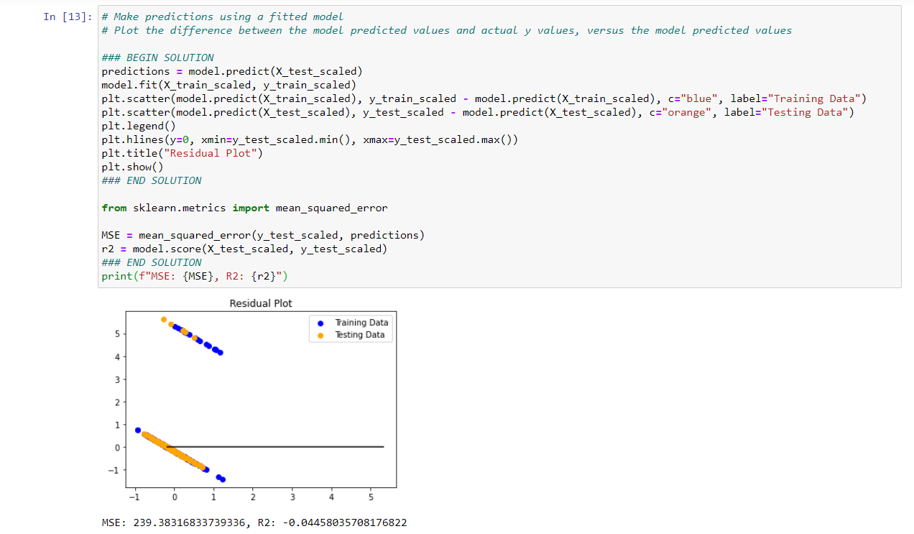
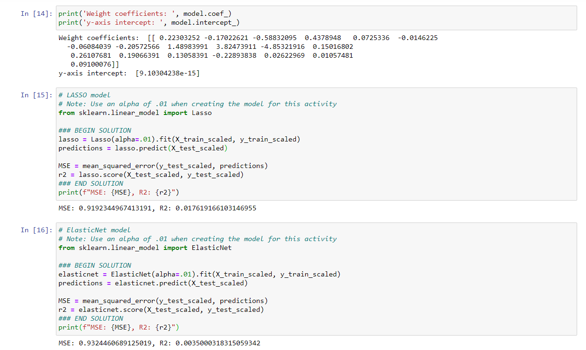

Overview
Create a multivariate linear regression to look at the correlation between team wins and team stats by using plotly and scikit-learn. From those results, we can train and test a model to predict the dependent variable (team wins from 2000-2020) given values from the independent variables (19 stats of each team every year by season end).
Step 1: Preprocessing the data

Step 2: Assigning values & creating a model to train/fit/test


Step 3: Make predictions



Outcome
All indicators show the model is insufficient in predicting team wins.
Future Considerations
- Look at every number of combinations amoung the 19 stat variables and create a model using best combos.
- Only look at the 8 teams who go into playoffs every year rather than use all 32 teams.
- Remove 2020 data.